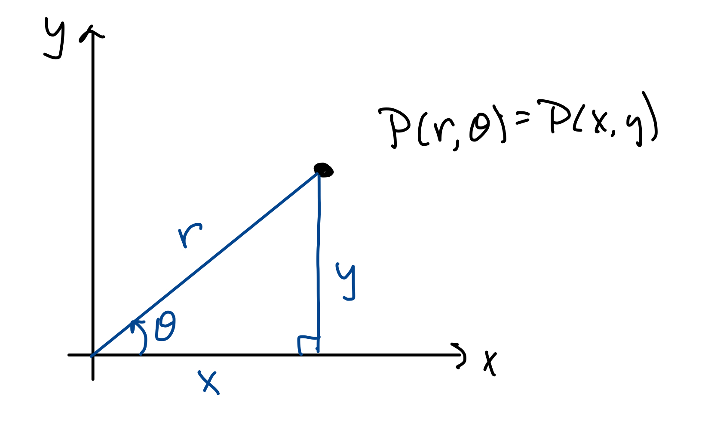
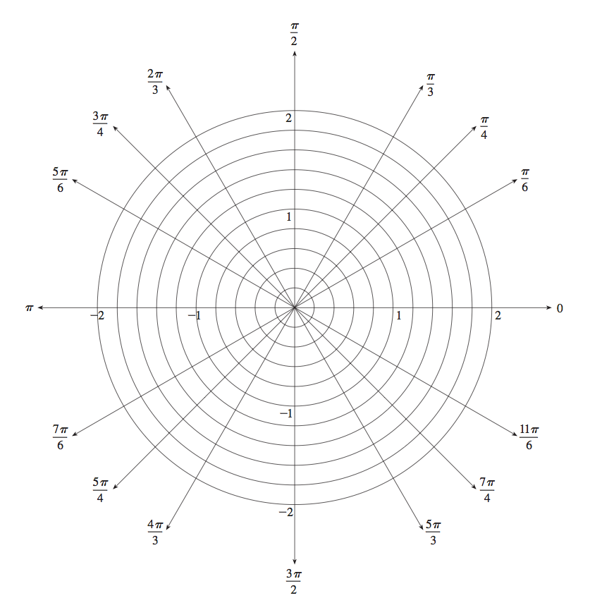

MATH 1336: Calculus III
Section 1.3: Polar Coordinates


Instead of describing points in terms of
and
coordinates, use:
: the
signed distance from the origin
: the angle measured
counter-clockwise from the -axis.
Note that in this context, we use the convention that
is a
signed distance, meaning that it may be positive or negative.
This allows us to generate more interesting graphs, and also gives us more ways to describe the same point in
space.
To translate back and forth between polar and Cartesian coordinates, we can use the following equations:
Polar Curves:
Given a polar equation ,
the graph is the set of all points that have at least one representation
that
satisfies the equation given.
Tangents to Polar Curves:
To find an expression for the slope of a polar curve, we start with our expression for the slope of a parametric curve, letting be the parameter, and then apply the product rule for derivatives:
We will work through Example 3 together, then work on the remaining problems in small groups.